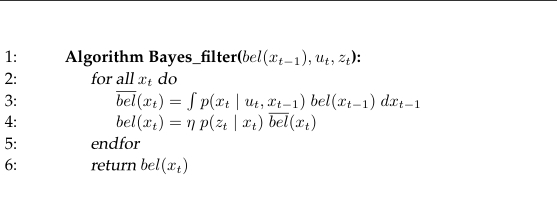

The foundation of all probabilistic robotics algorithms is the Bayes algorithm, which itself is based on the Bayes Rule. Bayes rule allows to inverse conditional probabilities using already known data as well as switch between conditional and simultaneous (intersection) probabilities.
This property is extensively used in the Bayes Filter, as well as all of its derivatives. By itself BF is not practical: since it needs to integrate on every cycle, the state space must be finite so that the integral becomes a finite sum, which is not the case for most potential applications.
